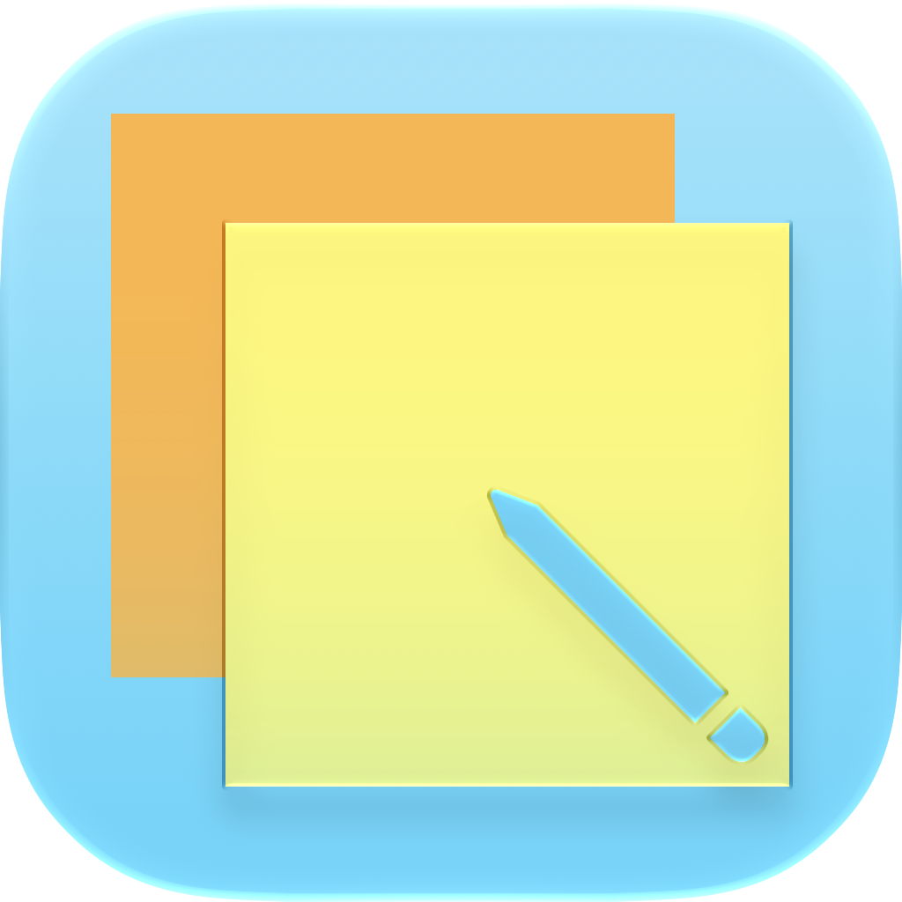

Anotae – Suas ideias em um só lugar
O Anotae é um espaço para registrar ideias e organizar o que faz parte do seu dia. Crie notas, monte listas e mantenha suas anotações sempre por perto.
Funciona assim:
- Notas: registre ideias, lembretes e informações para consultar quando precisar.
- Listas: organize tarefas e marque os itens concluídos.
- Tags: agrupe suas notas por assunto para facilitar a organização.
- Notas fixadas: deixe em destaque as anotações mais importantes.
- Arquivo: guarde notas que você quer manter sem deixá-las na tela inicial.
Sem necessidade de criar uma conta, com suas anotações salvas localmente no dispositivo.
Suporte
Para dúvidas, sugestões ou ajuda com o aplicativo, entre em contato pelo e-mail:
✉ slrecau1@gmail.com